The raem package provides a set of R functions to create
an analytic element model of steady-state, single-layer groundwater flow
under the Dupuit-Forchheimer assumption. This vignette gives a short
overview of the theory and basics behind analytic element modeling and
how the raem package implements this in R.
Introduction to analytic element modeling
First developed by Otto Strack and Henk Haitjema in the late 1970’s, the analytic element modeling (AEM) approach solves a groundwater flow problem by superposition of analytical solutions for features such as wells, streams and recharge. Each feature is called an element. By superimposing the individual solutions, the combined effect of all elements can be calculated at any point in space. An arbitrary number of elements can be placed at any location in the flow field. As such, the AEM method is more flexible than single analytical solutions and can be used to solve more complex cases. Compared to numerical solutions of the groundwater flow problem, the AEM method is relatively fast and easy to use and does not suffer from numerical instability or mass balance errors. Furthermore, it does not require a spatial grid, making it relatively scale-insensitive as results can be obtained at any scale or zoom-level and feature geometries do not depend on an a priori chosen model resolution. The AEM method is therefore often used for screening studies, regional groundwater flow modeling (often as a first step), as a “computational laboratory” for checking hypotheses, and as an educational tool.
Flow is governed by the Dupuit-Forchheimer approximation which states that the hydraulic head is hydrostatic at each point in the horizontal plane. In other words, there is no variation in along the vertical axis and horizontal flow is evenly distributed along the vertical axis. This reduces the dimensions of the problem, as the solution now only depends on the and coordinates. Although there are no vertical gradients, vertical flow can still be computed from mass balance considerations, i.e. areal recharge at the aquifer top or leakage through the aquifer bottom. Additionally for phreatic aquifers, the curvature of the water-table induces vertical flow components. Besides the Dupuit-Forchheimer assumption, the aquifer is assumed to be of infinite lateral extent, have a horizontal top and base and is homogeneous at the scale of interest. In practice, these assumptions appear to be (approximately) valid for cases when the groundwater system under consideration is much wider than it is thick, which is true for most regional aquifer systems. Groundwater flow in those systems is predominantly horizontal.
In areas where there is considerable vertical flow, such as near groundwater divides or near partially penetrating wells or streams, or when the flow system has a similar thickness and width , the Dupuit-Forchheimer approximation is not valid and a different method should be used, e.g. a numerical model of the 3D groundwater flow equation.
Solution method
For steady-state, single-layer Dupuit-Forchheimer flow in the horizontal plane, the governing equation is:
with the aquifer transmissivity , equal to with the horizontal hydraulic conductivity and the saturated thickness , the hydraulic head and a sink/source term .
When the aquifer is phreatic, the saturated thickness is variable and depends on , which renders the flow equation non-linear when solving for . Therefore, the discharge potential is introduced so that the governing flow equation becomes:
which is a linear equation that can be solved for . The resulting hydraulic heads can then be computed from:
with and the aquifer top and bottom elevation , respectively.
In addition to the discharge potential , there exists a stream function which is defined as a function that is constant along streamlines and whose difference between two points is equal to the amount of water flowing between those two points. By convention, the stream function increases to the right when looking in the direction of flow. It can be used to visualize the amount of flow in a groundwater system, e.g. when constructing flow nets. is only defined for the Laplace equation, i.e. when is zero. In modeling terms, this means that it is only specified outside area-sinks (see paragraph Area-sink below).
The discharge potential and the stream function fulfill the Cauchy-Riemann conditions and can therefore be combined into a complex potential whose real and imaginary terms are and , respectively. By solving the flow problem in terms of , and are solved simultaneously in the complex plane, which is described by the complex coordinate . The solution in terms of yields and eventually .
The negative derivative of with respect to is the complex discharge , whose real component is and whose negative imaginary component is , i.e. the and components of the discharge vector . represents the amount of flow in the aquifer integrated along the vertical (or, alternatively, the first derivative of in the and directions). The vertical component is determined from mass balance considerations as discussed above. The Darcy flux (also called specific discharge or Darcy velocity) is computed as . The average linear flow velocity is computed as with the aquifer porosity, which should represent the effective porosity.
Each element gives a solution for the governing flow equation in terms of , as well as for the complex discharge . An element has one or more free parameters, e.g. the discharge for a well element. These parameters may be user-specified or are a priori unknown, in which case they need to be computed from other conditions, e.g. a specified head. The parameters are specified at so called collocation points or control points. Since the solution for a given unknown element parameter depends on the results of all other elements, the complete system of equations needs to be solved simultaneously for all unknowns. This is done by setting up the flow equations at the collocation points in a matrix form of , which is then solved for the unknown parameter vector . Once the element parameters are known, the contributions of each element to the complex potential and the complex discharge at any point can be calculated and superimposed to form the resulting and values, which then yield the variables of interest such as and .
For a more complete overview of analytic element modeling, the reader is referred to Haitjema (1995), Strack (1989), Strack (2003) and Hunt (2006).
Elements
An overview of the elements available in raem is
provided. You can specify as many elements as you like, but keep in mind
that the solution matrix increases in size for every unknown element
parameter. Currently, every head-specified element in raem
supplies one unknown parameter to the solution matrix. Other elements
only have user-specified (i.e. known) parameters.
To create an AEM model with raem, first we need load
raem and specify the aquifer parameters. The porosity value
is only required by velocity().
library(raem)
k = 10 # hydraulic conductivity, m/d
top = 10 # aquifer top elevation, m
base = -15 # aquifer bottom elevation, m
n = 0.2 # aquifer effective porosity, -Well
The simplest element is a well with a specified discharge
,
which can be created with the well() function. It requires
the
and
coordinate of the well and the pumping rate
(positive for withdrawal). The well radius
can also be specified (default is
length units). Inside the well annulus as defined by
the solution is undefined. When an output variable is requested inside
this circle, its location is projected onto the nearest point on the
outer annulus. It is assumed that the well is screened across the full
(saturated) aquifer.
As an example, we specify two extraction wells. We then create the
model with a call to aem(). This function needs the aquifer
parameters and the elements. You can supply the elements individually or
put them into a single list(). The aem()
function automatically solves the system of equations by calling
solve.aem(). By default, the model has a variable saturated
thickness which depends on the calculated head. You can change this by
setting type = 'confined' to force the model to use a
constant saturated thickness, set equal to the aquifer thickness. This
may be useful when you want to force the system of equations to remain
linear when elements with a hydraulic resistance are supplied (see
below).
Finally, we create the contouring grid and plot the head contours in
blue and the streamlines in orange using contours(). Note
the ugly branch cuts (in AEM jargon) of the streamlines
extending from the well centers towards the negative x-axis, which is an
artifact of contouring the stream function.
# create well elements
w1 = well(x = 200, y = 0, Q = 300)
w2 = well(x = -200, y = 0, Q = 1000)
# create the model. This automatically solves the system of equations.
m = aem(k = k, top = top, base = base, n = n, w1, w2)
# set up the contouring grid
xg = seq(-600, 600, length = 100)
yg = seq(-300, 300, length = 100)
# plot head contours and streamlines
contours(m, xg, yg, col = 'dodgerblue', nlevels = 20, drawlabels = FALSE)
contours(m, xg, yg, variable = 'streamfunction', col = 'orange',
nlevels = 20, drawlabels = TRUE, add = TRUE)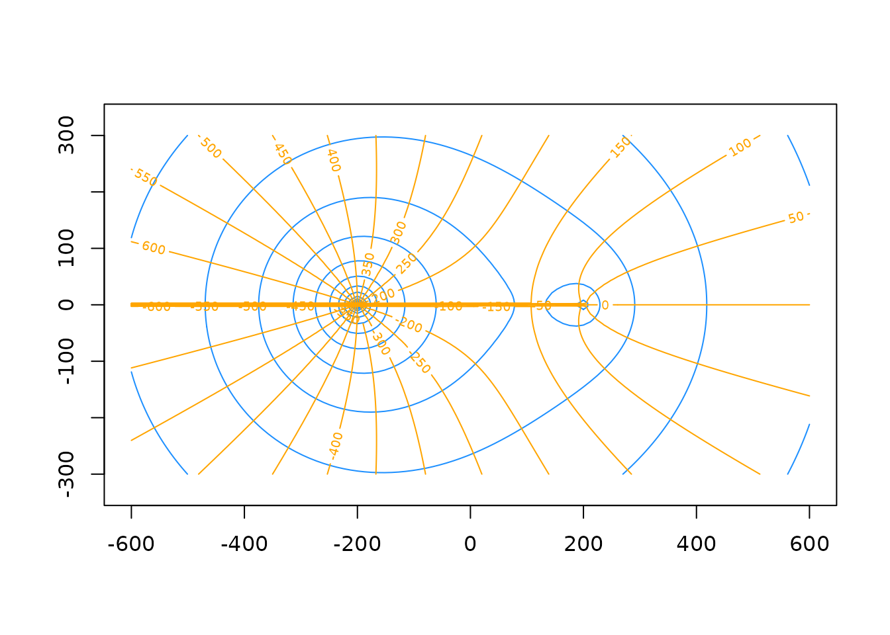
Head-specified well
The effect of a head-specified well can be simulated where instead of
a supplied discharge rate, the hydraulic head remains fixed at the well
location. By doing so, the element parameter of the well, which is its
discharge
,
needs to be calculated by the solution procedure. Such an element can be
created by headwell(). In addition to the well coordinates
and
,
a specified head
at the control point needs to be supplied. By default, this control
point coincides with the well’s location. Alternatively, you could
specify this location to be somewhere else by setting the
and
coordinates. This creates a well at location
with a calculated discharge so that the head at location
equals
.
As was the case with the well element above, a well radius can be
specified for both the well and the control point. Lastly, a hydraulic
resistance at the control point location can also be supplied through
the resistance argument (see also the Head-specified line-sink section
below).
When solving for unknown element parameters, a reference
point needs to be added to the model as created by the
constant() function. This is explained in more detail below
(Reference point).
In the example, two head-specified wells are created. The second well
has its control point at a different location than the well location. We
can get the computed discharge of the elements by accessing the
parameter value of the element in the list of elements
inside the model object. An alternative (and easier) method is to use
element_discharge().
# create head-specified wells
hw1 = headwell(xw = 300, yw = 100, hc = 6)
hw2 = headwell(xw = -200, yw = -100, xc = 0, yc = 0, hc = 7)
# create reference point element
rf = constant(x = -1000, y = 0, h = 8)
# create and solve model
m = aem(k, top, base, n, hw1, hw2, rf)
# plot head contours
contours(m, xg, yg, col = 'dodgerblue', nlevels = 20)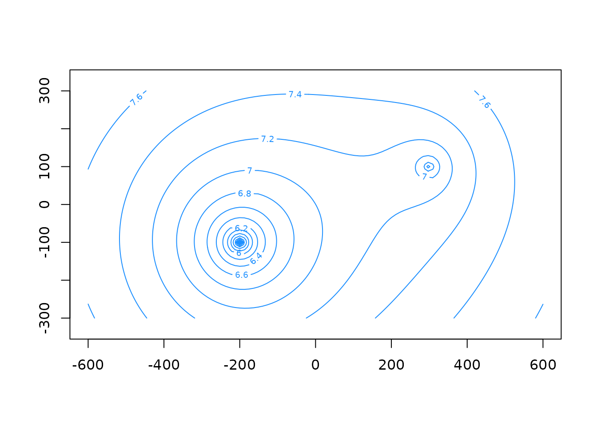
# computed discharge of hw1
m$elements$hw1$parameter
#> [1] 292.5061
# computed discharge of hw2
element_discharge(m, name = 'hw2')
#> hw2
#> 779.7601Reference point
When solving for unknown element parameters, a so-called
reference point (or reference head) needs to be added
to the model in order to have enough equations in the matrix formulation
to solve for all unknowns. This is a constant value which is added to
all hydraulic head values. It can be created by the
constant() function which needs an
and
coordinate and the reference head
.
It is important to understand that this reference point is not an actual
aquifer feature, but a mathematical necessity. Therefore, its value and
location should be chosen is such a way that it does not influence the
results too much. In general, the reference point should be never be
placed inside the zone of interest (called the “near-field” in
AEM lingo). It should be placed in the far-field and given a “neutral”
head value as to not induce unrealistic gradients towards the
near-field.
Line-sink
Line-sinks are elements with a line geometry which can be used to simulate groundwater flow to and from surface water features such as streams or canals. The parameter of a line-sink is its strength , which is defined as the total flow to/from the line-sink per unit length of the line (positive going into the line-sink). The parameter is defined at a collocation point at the center of the line-sink.
Here, a single line-sink is created using linesink(). In
addition to the start- and endpoints of the line-sink
and
,
the strength parameter needs to be specified. Optionally, a width can
also be given, which for a strength-specified line-sink is only used in
particle tracking to determine when the particles have reached the
line.
Note that the locations of all elements in an aem object
with line and point geometries (except the reference point) can be
plotted using the plot.aem() method. Individual element
locations can always be plotted by calling plot.element()
on the respective element object.
# create line-sink
ls = linesink(x0 = -200, y0 = 200, x1 = 200, y1 = -200, sigma = 5)
# create and solve the model
m = aem(k, top, base, n, ls)
# plot head contours and line-sink geometry
contours(m, xg, yg, col = 'dodgerblue', nlevels = 20, drawlabels = FALSE)
plot(m, add = TRUE)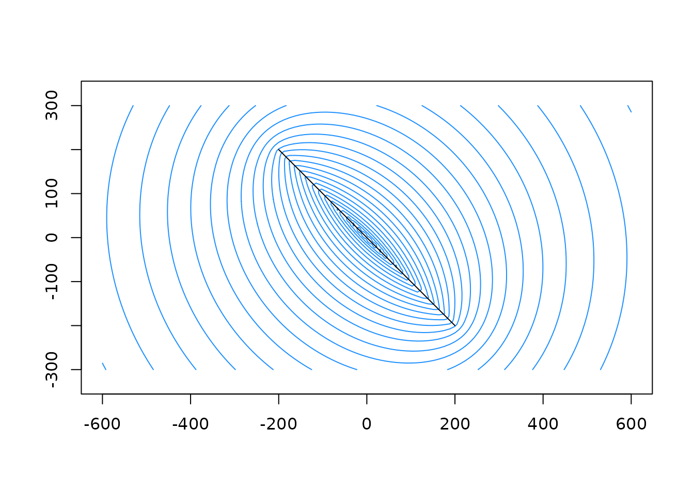
Head-specified line-sink
Although useful, strength-specified line-sinks are not often used in modeling applications since the discharge into/from streams is often unknown. Head-specified line-sinks on the other hand are widely used in AEM studies, where they represent streams and other surface water features with known water levels. The absence of a numerical grid makes it straightforward to implement complex stream geometries.
A head-specified line-sink can be created with
headlinesink(). In addition to the start- and endpoints of
the line, the hydraulic head at the collocation point needs to be given,
which is located at the center of the line-sink. The line-sink strength
is unknown and is calculated by solving the system of equations. When
the aquifer head is above the head of the line-sink, the line-sink is
draining the aquifer (positive line-sink strength
).
If the aquifer head is below the line-sink head, the line-sink is
discharging into the aquifer. In raem, zeroth order
line-sinks are used, which result in a constant strength along the line,
and thus a varying head. As such, a single stream with a constant head
should be approximated with many short line-sinks. Other AEM codes may
use higher order line elements where the strength can vary along the
line.
By default, the line-sink is assumed to be in full hydraulic contact
with the aquifer and fully penetrates the entire saturated depth.
Alternatively, a hydraulic resistance may be specified between the
aquifer and the line-sink representing the effect of a low-permeability
connection due to e.g. fine-grained streambed sediments. Additionally,
the width parameter is used in conjunction with the
resistance parameter to calculate the hydraulic
conductance. When the model has a variably-saturated thickness
(type = 'variable' in aem(); default), this
renders the system of equations non-linear. As such, an outer iteration
loop is entered, with a default of 10 iterations (see also
aem() and solve.aem()). As discussed above,
setting type = 'confined' keeps the system linear and in
which case no outer iteration is needed.
As a general rule of thumb, line-sinks in the far-field should not have resistance or width values specified, so that they act as constant-head boundaries which fix the head in the far-field. Line-sinks in the near-field on the other hand should have resistances and widths specified to give a more realistic representation of the surface water features in that area.
As an example, a single stream is modeled with several head-specified
line-sinks. They are bundled in a list() element and
supplied to the model. A reference point also needs to be added.
Information on the iteration loop is printed by setting
verbose = TRUE in the aem() call.
el = list(rf = rf) # list of elements
nls = 10 # number of line-sinks
xls = seq(-700, 700, length = nls + 1) # x-coordinates of line-sinks
yls = c(rep(c(-25, 25), nls), -25) # y-coordinates of line-sinks
hc = 7 # stream level, m
res = 2 # hydraulic resistance of streambed, days
width = 3 # stream width, m
# create head-specified line-sinks
for(i in seq(nls)) {
hl = headlinesink(x0 = xls[i],
x1 = xls[i + 1],
y0 = yls[i],
y1 = yls[i + 1],
hc = hc,
resistance = res,
width = width)
el[[paste0('hls_', i)]] = hl
}
# create and solve model
m = aem(k, top, base, n, el, verbose = TRUE)
#> Solving analytic element model ...
#> Non-linear model with 11 elements and 11 unknowns
#> Entering outer iteration loop ...
#> Iteration 1
#> Iteration 2
#> Iteration 3
#> Iteration 4
#> Iteration 5
#> Iteration 6
#> Iteration 7
#> Iteration 8
#> Iteration 9
#> Iteration 10
#> Model solved
# plot head contours
contours(m, xg, yg, col = 'dodgerblue', nlevels = 10)
plot(m, add = TRUE)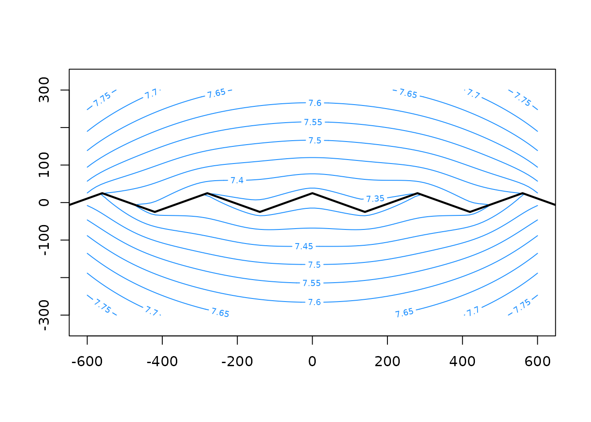
Area-sink
Area-sinks are circular elements that can be added at the top or
bottom of the model. They provide a constant flux and can be used to
simulate areal recharge or leakage through the aquifer base. The
circular geometry is sufficient as long as the disc covers the entire
area of interest and the heads inside are fixed by head-specified
elements. The parameter is the specified flux value N
,
defined at the center of the area-sink and applied uniformly across the
entire disc.
Use of an area-sink introduces vertical flow components, besides the
ones that occur due to the curvature of the water-table in a phreatic
aquifer when variably saturated thickness is used in the
aem() model. Note that the stream function does not give
reasonable results inside the area covered by an area-sink, as discussed
above.
The areasink() function requires the center coordinates
of the circular area-sink, as well as the flux value N
(positive is into the aquifer, note that this differs from other
elements) and a radius R. The value of R is
not important as long as its large enough so that the disc covers the
modeled region. By default, the area-sink is placed at the aquifer top,
which can be overridden by setting location = 'base'.
To illustrate to effect an area-sink providing areal recharge at the aquifer top, the example of the head-specified line-sinks above is used and an area-sink is added. Note the increased head values compared to the case without recharge.
# add area-sink to list of elements
el$as = areasink(x = 0, y = 0, N = 0.001, R = 1000)
# create and solve the model
m = aem(k, top, base, n, el)
# plot head contours
contours(m, xg, yg, col = 'dodgerblue', nlevels = 10)
plot(m, add = TRUE)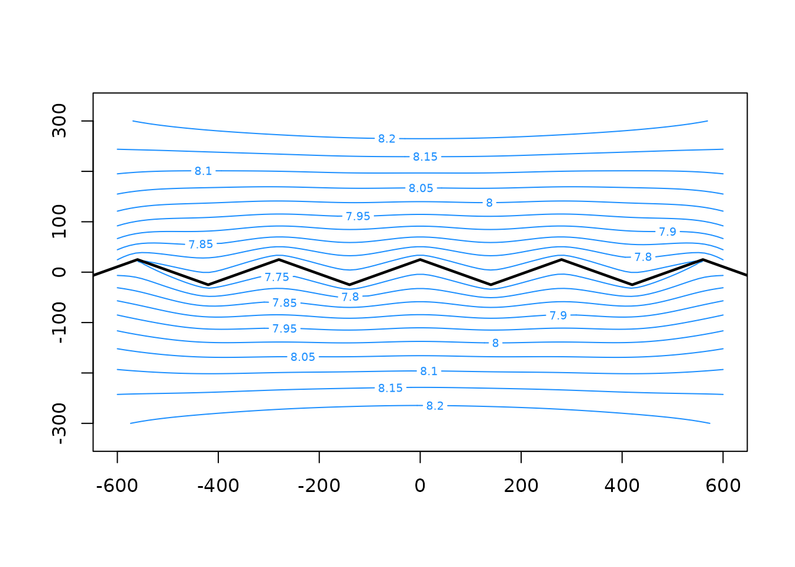
Head-specified area-sink
Similar to line-sinks and head-specified line-sinks, the area-sink can also be given a specified head. The constant flux then needs to be calculated by solving the system of equations. Since the head is specified at the center of the disc, the computed flux is calculated from the head gradient at this location and applied over the entire circular area. This is for example useful to simulate ponds or wetlands with limited areal extent. For large lakes on the other hand, a better representation would be to create a series of head-specified line-sinks along the lake boundary, as that is where most of the groundwater interaction occurs for such type of surface water features.
The headareasink() function creates a head-specified
area-sink element. Similar to headlinesink(), the
resistance parameter determines the hydraulic resistance
between the aquifer and the area-sink. This also renders the system of
equations non-linear when the aquifer has a variable saturated thickness
(type = 'variable' in aem()).
To illustrate its use, leakage from a small, circular pond is simulated using a head-specified area-sink applied to the model with two extraction wells created earlier.
# create head-specified area-sink
has = headareasink(x = 0,
y = 200,
h = 5,
resistance = 1,
R = 100)
# create and solve model
m = aem(k, top, base, n, w1, w2, rf, has)
# plot head contours and area-sink geometry
contours(m, xg, yg, col = 'dodgerblue', nlevels = 20)
plot(has, add = TRUE, col = adjustcolor('grey50', alpha = 0.5))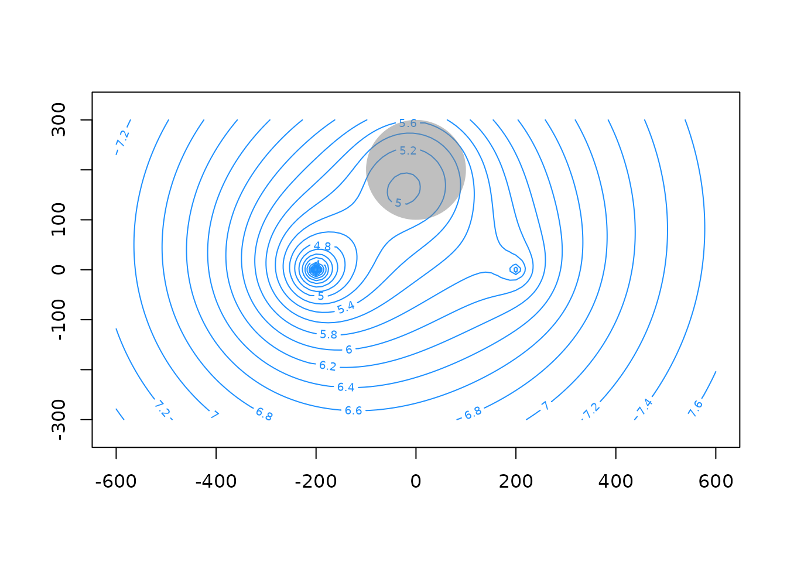
Uniform flow
An element can be created which models a specified, uniform
background flow in the aquifer. In general, the regional gradient should
be modeled by including head-specified surface water elements which will
induce a background flow in the model. For certain applications however,
it may be useful to specify this uniform background flow explicitly,
e.g. when the regional system is not fully included in the model. This
can be done by using uniformflow(). It requires a
transmissivity value which remains constant in the entire domain
(i.e. has a constant saturated thickness independent of the simulated
heads), a gradient which is positive in the direction of flow, and an
angle in degrees counterclockwise from the positive x-axis:
# create uniform flow element
uf = uniformflow(TR = k * (top - base), gradient = 0.001, angle = -30)
# create model
m = aem(k, top, base, n, uf, rf)
# plot head contours
contours(m, xg, yg, col = 'dodgerblue', nlevels = 20)
# add stream lines
contours(m, xg, yg, variable = 'streamfunction',
col = 'orange', nlevels = 20, add = TRUE)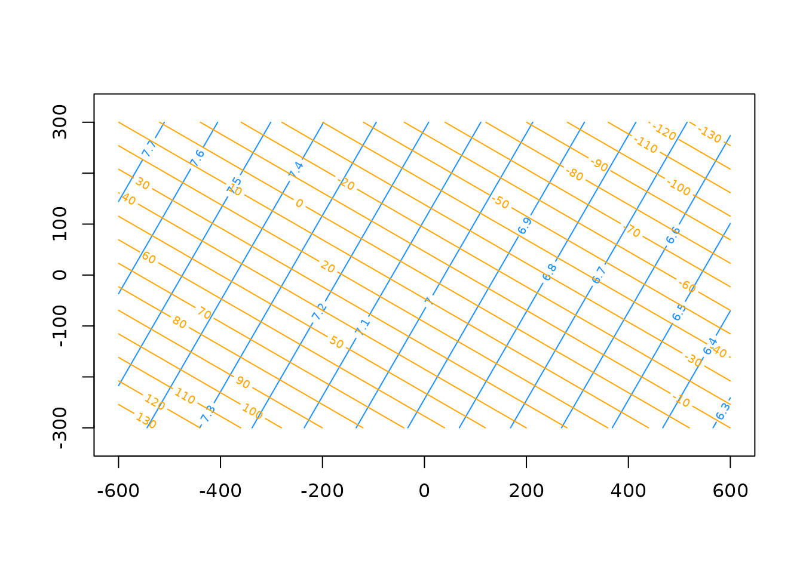
Setting up a model
As an example, an analytic element model is created for a phreatic system with two wells near a stream which is not in full hydraulic contact with the aquifer. The stream is approximately straight and flowing from south to north along , with the stream level decreasing in the direction of flow. The stream is divided into segments which are shorter near well A. The sandy aquifer has an approximately horizontal bottom elevation, and can be considered homogeneous for the scale and purpose of the modeling exercise. Areal recharge is simulated using an area-sink.
The add_element() function is used to add elements to an
initially empty model. After all the elements are added, the model needs
to be solved with an explicit call to solve.aem(). This is
useful for adding elements to a model in a loop or pipeline.
A major benefit of the AEM approach is that no numerical grid of the domain is needed. This allows to zoom in on an area of interest without altering or rerunning the model, as illustrated by the plot of the inset area around well A (green rectangular in the first plot).
# aquifer parameters ----
k = 15 # hydraulic conductivity, m/d
top = 20 # aquifer top elevation, m
base = -10 # aquifer bottom elevation, m
n = 0.2 # aquifer effective porosity, -
N = 0.2 / 365 # areal recharge rate, m/d
res = 2 # streambed resistance, d
width = 5 # stream width, m
hr = 17.5 # stream level at head of stream, m
hrg = 0.0005 # gradient of stream level, -
href = 18.5 # head at reference point, m
# stream coordinates and water level
yriv = c(seq(-1000, -300, by = 200),
seq(-200, 200, by = 20),
seq(300, 1000, by = 200))
hriv = hr - (yriv - yriv[1]) * hrg
nls = length(yriv)
# create elements ----
wA = well(x = -300, y = 0, Q = 550)
wB = well(x = -500, y = -300, Q = 450)
as = areasink(x = -50, y = 0, N = N, R = 2000)
rf = constant(x = 1000, y = -1000, h = 18.5)
# create model ----
m = aem(k, top, base, n) |> # first, create model with no elements
add_element(wA) |> # add elements
add_element(wB) |>
add_element(as) |>
add_element(rf)
# add head-specified line-sinks in a loop
for(i in seq(nls - 1)) {
hls = headlinesink(x0 = 0,
x1 = 0,
y0 = yriv[i],
y1 = yriv[i + 1],
h = hriv[i],
resistance = res,
width = width
)
m = add_element(m, hls, name = paste('stream', i, sep = '_'))
}
# solve
m = solve(m)
# view head contours ----
par(mar = c(4, 4, .3, .3))
xg = seq(-800, 300, length = 100)
yg = seq(-600, 300, length = 100)
contours(m, xg, yg, col = 'dodgerblue', levels = seq(16, 18.5, 0.1), labcex = 0.8,
xlab = 'x (m)', ylab = 'y (m)')
plot(m, add = TRUE)
polygon(x = c(-500, 50, 50, -500), y = c(-200, -200, 150, 150), border = 'forestgreen')
grid() # add gridlines to plot
# view inset near well A
xg = seq(-500, 50, length = 100)
yg = seq(-200, 150, length = 100)
contours(m, xg, yg, col = 'dodgerblue', levels = seq(16, 18, 0.05), labcex = 0.8,
xlab = 'x (m)', ylab = 'y (m)')
grid()
# plot control points of line-sinks
for(i in m$elements) {
if(inherits(i, 'linesink')) {
plot(i, add = TRUE, use.widths = FALSE)
points(i$xc, i$yc, pch = 16, cex = 0.8)
}
}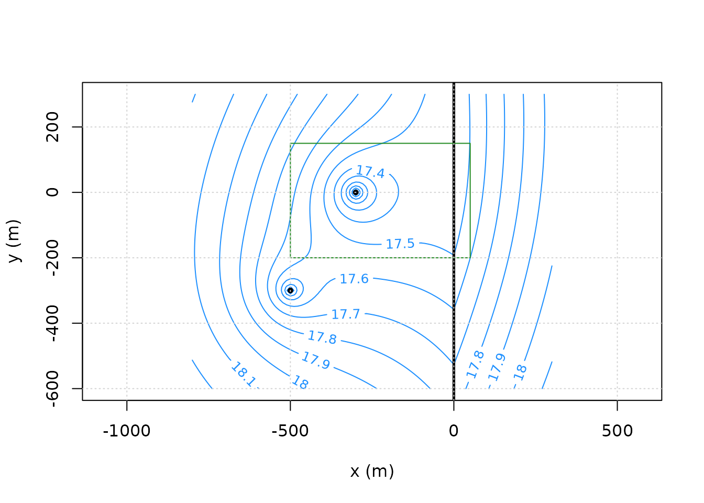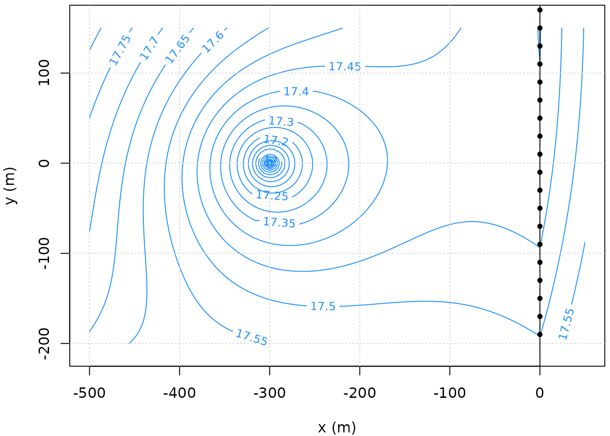
Output
Hydraulic heads from an aem object at any x
and y location can be obtained with heads()
(not to be confused by utils::head()). The x
and y arguments are recycled. By setting
as.grid = TRUE, a grid of head values is obtained by using
the x and y values as marginal grid
vectors:
heads(m, x = c(-350, -200), y = -100)
#> [1] 17.46994 17.44073
# as a grid
heads(m, x = seq(-500, -100, length = 8), y = seq(-200, 100, 60), as.grid = TRUE)
#> [,1] [,2] [,3] [,4] [,5] [,6] [,7] [,8]
#> [1,] 17.78207 17.68756 17.58476 17.48926 17.44123 17.44028 17.44520 17.43943
#> [2,] 17.74401 17.63636 17.50049 17.31946 17.27566 17.36877 17.41453 17.42836
#> [3,] 17.71670 17.60830 17.46713 17.23316 17.19484 17.35159 17.41181 17.43322
#> [4,] 17.69875 17.60562 17.50487 17.40761 17.37671 17.41047 17.44189 17.45568
#> [5,] 17.67895 17.60743 17.54704 17.50030 17.47868 17.48040 17.48826 17.49047
#> [6,] 17.63721 17.59317 17.57253 17.55656 17.54577 17.54085 17.53762 17.53121Similar functions exist for the discharge potential
(potential()), the complex potential
(omega()) and the stream function
(streamfunction()). The heads, potentials and stream
function can all be contoured by setting the variable
argument in contours() (defaults to
"heads").
To plot a cross-section of the water-table, simply compute the head values at the points along the profile line and plot:
xprofile = seq(-800, 400, length = 1000)
hprofile = heads(m, x = xprofile, y = -100)
par(mar=c(4, 4, 0.3, 0.3))
plot(xprofile, hprofile, type = 'l', xlab = 'x (m)', ylab = 'head (m)')The components of the discharge vector
at any x, y and z coordinate are
obtained from an aem object with the
discharge() function. Values are positive with increasing
axis value. When the specified z coordinate is above the
water-table or aquifer top, or below the aquifer base, NA's
are returned for the z component with a warning. Similar to
the state-variables discussed above, as.grid can be set to
TRUE to obtain an output grid for the given x,
y and z vectors. Furthermore, setting
magnitude = TRUE will return an additional column with the
vector’s magnitude, defined as the Euclidean norm of the vector
components.
discharge(m, x = c(-350, -200), y = -100, z = 15)
#> Qx Qy Qz
#> [1,] 0.5337762 0.5528572 -0.01500301
#> [2,] -0.1751007 0.4348954 -0.01418512
# NA's for z-component
discharge(m, x = c(-350, -200), y = -100, z = top)
#> Warning: Setting Qz values to NA for z above saturated aquifer level or below
#> aquifer base
#> Qx Qy Qz
#> [1,] 0.5337762 0.5528572 NA
#> [2,] -0.1751007 0.4348954 NA
# as.grid
str(discharge(m,
x = seq(-350, -200, length = 5),
y = seq(-200, -100, length = 4),
z = c(10, 15, length = 3),
as.grid = TRUE))
#> num [1:4, 1:5, 1:3, 1:3] 0.534 0.353 0.223 0.113 0.303 ...
#> - attr(*, "dimnames")=List of 4
#> ..$ : NULL
#> ..$ : NULL
#> ..$ : NULL
#> ..$ : chr [1:3] "Qx" "Qy" "Qz"
# magnitude
discharge(m, x = c(-350, -200), y = -100, z = 15, magnitude = TRUE)
#> Qx Qy Qz Q
#> [1,] 0.5337762 0.5528572 -0.01500301 0.7686307
#> [2,] -0.1751007 0.4348954 -0.01418512 0.4690367Similar functions exist for the Darcy flux
(darcy()) and the average linear flow velocity
(velocity()). The latter uses the aquifer porosity value
set in the aem object. Additionally, a retardation
coefficient
can be specified (defaults to 1, i.e. no retardation), in which case the
apparent velocity
is used instead of
.
Particle traces
Tracelines of particles can be computed using
tracelines(). It tracks particle locations through the flow
field by numerically integrating the velocity vector calculated by
velocity(). By connecting the locations of a particle in
time, its traceline can be drawn. Besides the aem object,
the initial x, y and z locations
of each particle need to be specified. When the initial z
location is above the water-table or aquifer top, or below the aquifer
base, it is reset to its nearest boundary with a warning. The
times argument is a numeric vector with the requested
tracking times.
The output is a list of matrices (one for each particle) with columns
time, x, y and z,
containing the tracking time and particle location. The final row
represents the particle’s location at the final time or, when it
terminated prematurely, at the time of termination. Termination occurs
when a particle enters a well’s inner radius, crosses a draining
line-sink, or exits through leakage at the aquifer bottom or top, which
is represented by the water-table in a phreatic aquifer.
A single matrix of all final particle locations can be obtained from
the output of tracelines() by using the
endpoints() function. The output of
tracelines() can be plotted using
plot.tracelines(). The endpoints can simply be added by
using points().
# calculate particle traces
paths = tracelines(m,
x0 = -600,
y0 = seq(-200, 200, 50),
z0 = top,
times = seq(0, 5 * 365, 365 / 10)) # 10 steps per year for 5 years
#> Warning: Resetting z0 values above saturated aquifer level or below aquifer
#> base
# plot head contours and element geometries around well A
xg = seq(-600, 100, length = 100)
yg = seq(-200, 200, length = 100)
contours(m, xg, yg, col = 'dodgerblue', nlevels = 20)
plot(m, add = TRUE)
# add tracelines to plot
plot(paths, add = TRUE, col = 'orange')
# compute and plot endpoints
endp = endpoints(paths)
points(endp[,c('x', 'y')])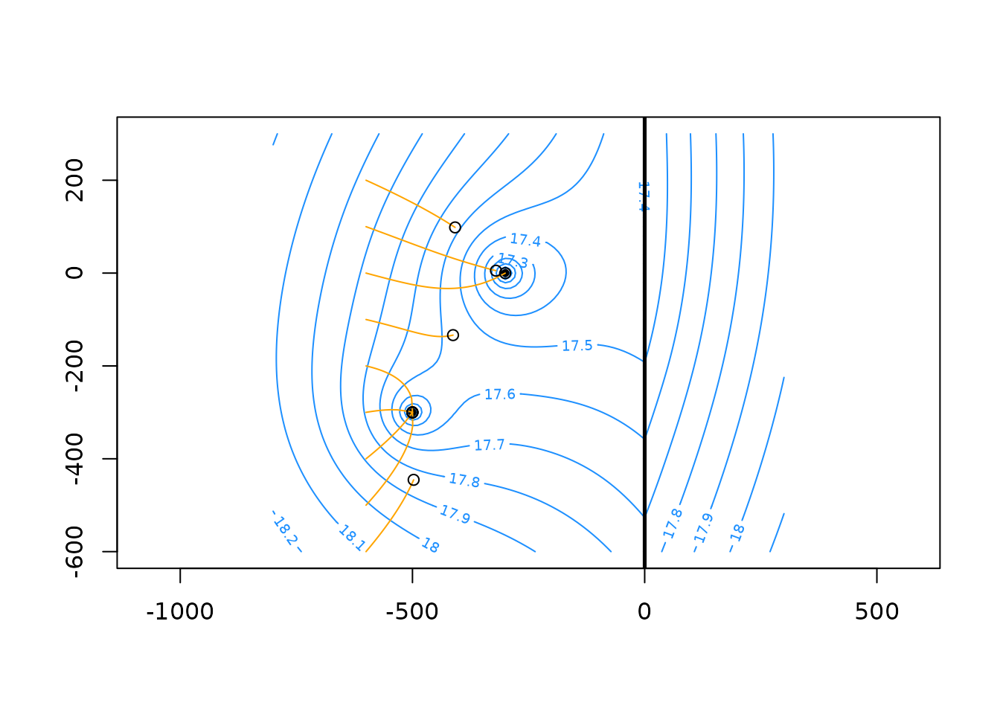
Backward particle tracking can be performed by setting
forward = FALSE. A retardation coefficient R
can be passed to velocity(). When plotting the tracelines
with plot.tracelines(), markers at a specified time
interval can be placed by setting marker to the desired
interval, e.g. every 180 days.
# compute backward particle tracking with retardation
backward = tracelines(m,
x0 = -250,
y0 = -50,
z = 10,
forward = FALSE,
R = 1.5,
times = seq(0, 5 * 365, 365 / 10))
# plot the head contours and element geometries around well A
contours(m, xg, yg, col = 'dodgerblue', nlevels = 20)
plot(m, add = TRUE)
# plot backward particle trace with a marker every 1.5 years
plot(backward, col = 'forestgreen', add = TRUE, marker = 1.5 * 365)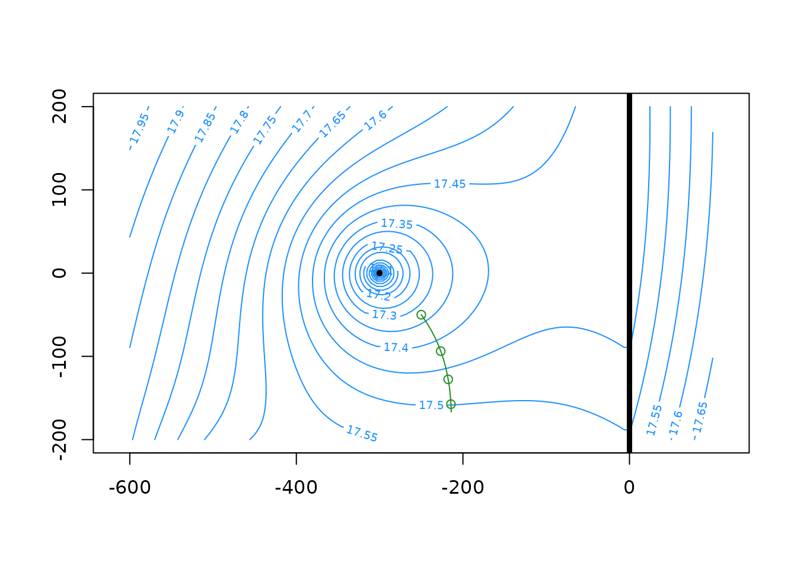
Lastly, particle tracking can be computationally expensive. Since the
particles are independent of one another, the computations are embarrassingly
parallel however. tracelines() allows parallel
computation of the particle traces by setting the ncores
argument larger than zero. This distributes the calculations among
ncores cores using the parallel package, one
of the base packages in R.
For more examples of particle tracking, see the
tracelines() documentation.
Capture zone
A special case of particle tracking is the capture zone delineation
for a well. This can be done using capzone(), a thin
wrapper around tracelines() which places npar
evenly distributed particles around the well’s radius and tracks them
back in time using time steps of length dt until the
requested capture time is reached. By plotting the tracelines, the
capture zone can be be delineated. Initial particle locations are placed
at the aquifer base (zstart argument). Different results
may be obtained in models with vertical flow components by placing
initial particle locations at different zstart values. By
increasing the amount of particles or decreasing the time step length, a
sharper delineation of the capture zone envelope may be obtained.
# 5-year capture zone of well A
cpA_5 = capzone(m, wA, time = 5 * 365, npar = 10)
# plot head contours and element geometries
xg = seq(-800, 300, length = 100)
yg = seq(-600, 300, length = 100)
contours(m, xg, yg, col = 'dodgerblue', nlevels = 20)
plot(m, add = TRUE)
# plot capture zone output
plot(cpA_5, add = TRUE)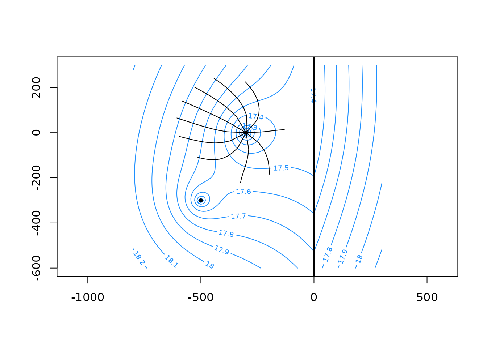
Additional functionality
raem contains some additional functionality which may be
useful in some cases. These are listed below. Examples are shown in the
respective documentation pages.
-
satthick()calculates the saturated thickness of the aquifer at givenxandylocations. For a confined aquifer, the saturated thickness always equals the aquifer thickness. -
dirflow()computes a flow variable (discharge , Darcy flux or velocity ) in the direction of a given angle. This may be useful to see what the amount of flow is in a certain direction besides parallel to thex,yandzaxes. -
flow_through_line()calculates the amount of flow passing through a straight line by numerically integrating the requested flow variable ( or ). - As shown above,
element_discharge()gets the computed discharge () for a given element or element type, positive discharge being out of the aquifer.
Further reading
The references given at the end of Introduction to
analytic element modeling are highly recommended for anyone wanting
to learn more about analytic element modeling theory and its
applications. Bakker
& Post (2022) is another book that serves as a great
introduction to analytic element modeling, and analytical groundwater
flow modeling in general. raem started out as an R
implementation of some of the material in that book. Readers familiar
with Bakker & Post (2022), or with its author’s other work, will
therefore find some familiarity with the naming conventions and general
coding structure in raem.